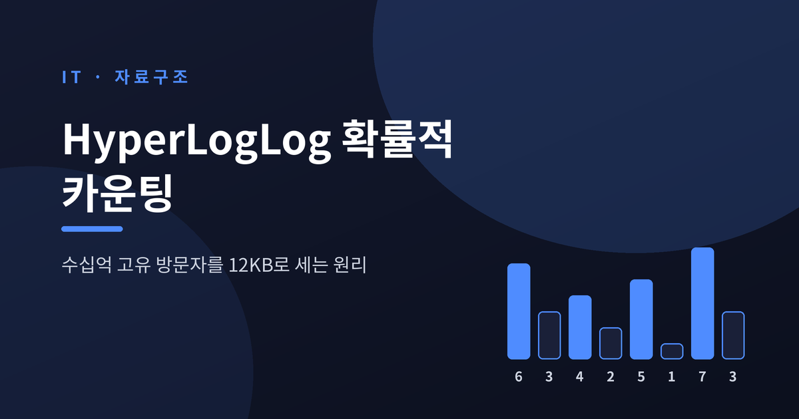
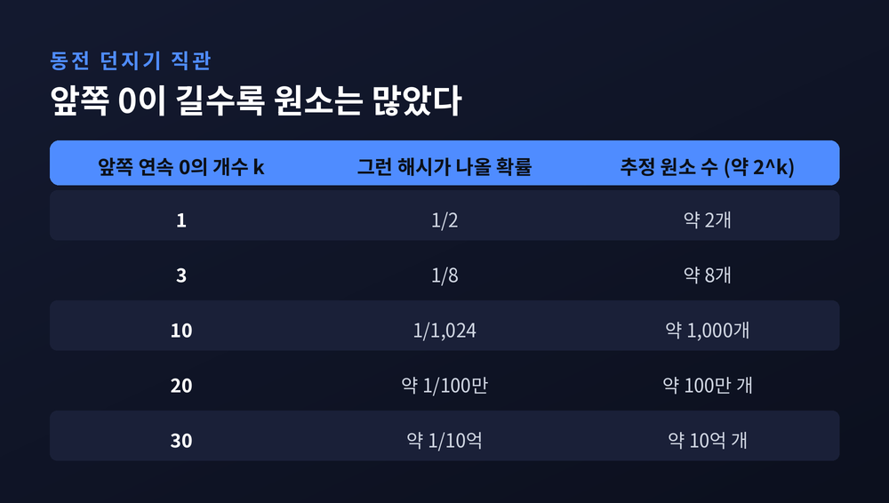
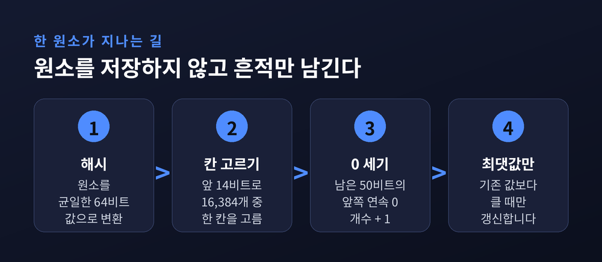
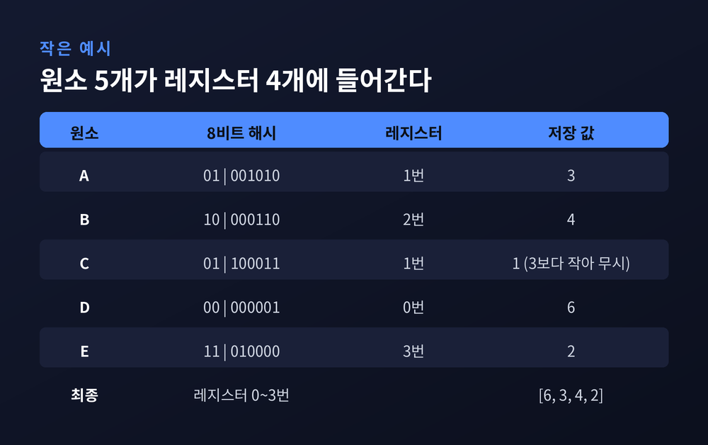
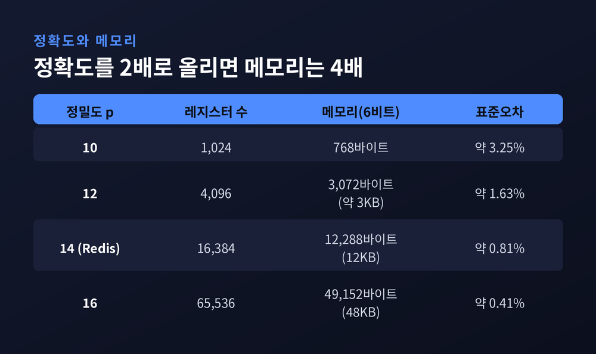
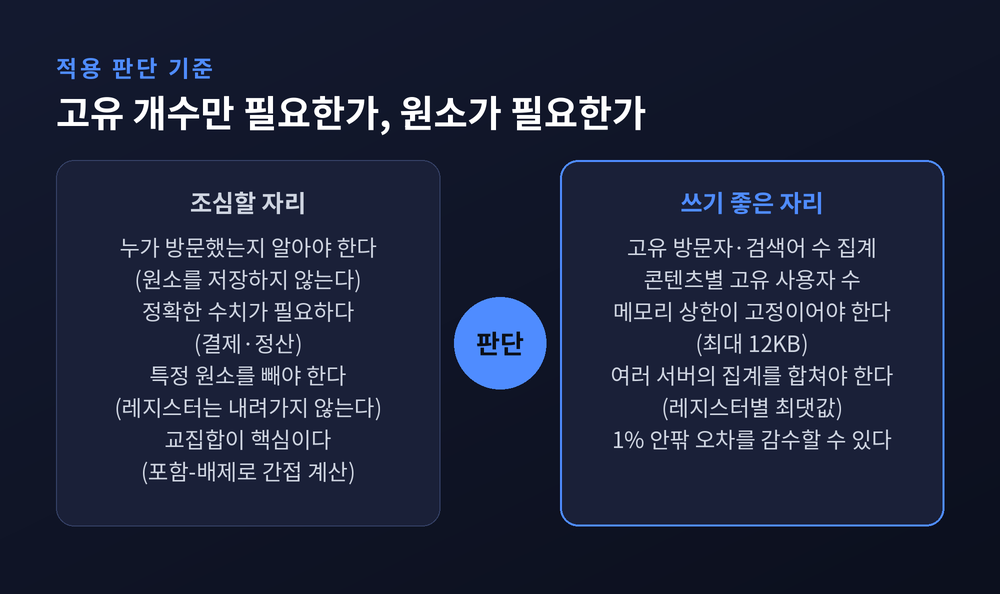

HyperLogLog 원리, 수십억 고유 방문자를 12KB로 세는 방법
이번 글에서는 HyperLogLog를 정리해 보겠습니다. 서로 다른 원소가 몇 개인지를 세는 문제를, 원소를 하나도 저장하지 않고 푸는 알고리즘입니다. 방문자가 수십억 명이어도 메모리는 최대 12KB면 충분합니다.

세 줄 요약
- HyperLogLog는 해시값 앞쪽에 연속으로 0이 몇 개 나왔는지의 최댓값만 기억해, 고유 원소 수를 추정합니다.
- Redis 구현은 6비트 레지스터 16,384개, 즉 최대 12KB로 최대 2^64개 집합을 표준오차 0.81%로 셉니다.
- 레지스터별 최댓값만 취하면 합집합이 되므로, 여러 서버의 집계를 그대로 합칠 수 있습니다. 대신 원소 목록은 복원할 수 없습니다.
정확히 세려는 순간 메모리가 터집니다
고유 방문자 수(cardinality)를 세는 일은 단순해 보입니다.
이미 본 사람인지 확인하려면 본 사람을 전부 기억해야 합니다.
해시셋에 넣으면 되지만, 메모리가 원소 수에 비례해 늘어납니다.
방문자가 10억 명이라고 해 보겠습니다.
ID를 4바이트씩만 저장해도 4GB입니다. 8바이트 ID라면 8GB입니다.
해시셋의 부가 비용은 계산에 넣지도 않은 수치입니다.
게다가 콘텐츠마다, 날짜마다 따로 세려면 이 부담이 그대로 곱해집니다.
이 문제를 보는 시각을 바꾼 것이 1985년 플라졸레와 마르탱의 확률적 카운팅이었습니다.
이후 2003년 LogLog를 거쳐 2007년 HyperLogLog로 다듬어졌습니다.
HyperLogLog 논문은 10^9을 넘는 카디널리티를 표준오차 약 2%, 메모리 1.5킬로바이트로 추정할 수 있다고 밝혔습니다.
정확도 공식은 1.04/√m으로, LogLog의 1.30/√m보다 낮았습니다.
같은 정확도를 LogLog 메모리의 64%로 얻는다는 뜻입니다.
예전엔 정확한 답을 위해 모든 원소를 쥐고 있어야 했습니다. 지금은 원소를 버리고 흔적 하나만 남깁니다.
동전 던지기에서 시작된 직관
원리는 동전 던지기로 설명할 수 있습니다.
누군가 동전을 던져 앞면이 연속으로 나온 최장 기록을 알려 줍니다.
"최대 3번 연속이었다"라면, 그 사람은 동전을 많이 던지지 않았다고 짐작할 수 있습니다.
"최대 20번 연속이었다"라면 엄청나게 많이 던졌다고 봐야 합니다.
해시값에도 똑같이 적용됩니다.
좋은 해시 함수는 출력 비트를 동전처럼 균일하게 만듭니다.
그러면 앞쪽에 0이 k개 연속으로 나올 확률은 2^k분의 1입니다.
최장 연속 0이 k였다면 원소가 대략 2^k개 있었다고 추정하는 것이 이 알고리즘의 출발점입니다.
같은 원소는 몇 번을 넣어도 같은 해시값이 나옵니다.
그래서 중복은 자동으로 무시됩니다. 최댓값만 기억하기 때문에 같은 값을 다시 넣어도 달라질 것이 없습니다.

문제는 분산입니다.
운이 나쁘면 단 하나의 원소가 아주 긴 0 행렬을 만들어 추정치가 크게 틀어집니다.
동전 한 명의 기록만 믿는 셈이니까요.
해법은 실험자를 여럿 두는 것입니다.
레지스터 여러 개로 쪼개고, 조화평균으로 합칩니다
해시값을 둘로 나눕니다.
앞쪽 b비트는 레지스터 번호로 씁니다. 나머지 비트는 연속 0의 개수를 세는 데 씁니다.
각 레지스터에는 "연속 0의 개수 + 1"의 최댓값만 저장합니다.
0이 아니라 1을 더하는 이유가 있습니다. 한 번도 선택되지 않은 레지스터는 0으로 남고, 선택된 레지스터는 최소 1이 되어 둘을 구분할 수 있기 때문입니다.

Redis는 64비트 해시 가운데 14비트로 레지스터 16,384개 중 하나를 고릅니다.
나머지 50비트에서 연속 0의 길이를 잽니다. 연속 0의 길이는 길어야 51이라 6비트(최대 63)에 들어가므로, 레지스터 하나가 6비트면 됩니다.
16,384 × 6비트 = 12,288바이트이니, 12KB라는 숫자가 여기서 나옵니다.
작은 예로 보겠습니다. 해시를 8비트로 줄이고, 앞 2비트로 레지스터 4개 중 하나를 고르는 상황입니다.

원소 A와 C는 같은 1번 레지스터로 갔습니다. A는 3, C는 1이었으니 큰 값인 3만 남습니다.
최종 레지스터는 [6, 3, 4, 2]입니다.
0번 레지스터의 6은 원소 D 하나가 만든 튀는 값입니다.
이런 값에 휘둘리지 않도록 평균은 조화평균 형태로 냅니다.
추정식은 다음과 같습니다.
E = α_m · m² / Σ 2^(−M[j])
M[j]는 j번 레지스터의 값이고, α_m은 편향을 맞추는 상수입니다.
예시에서 분모 Σ 2^(−M[j])는 1/64 + 1/8 + 1/16 + 1/4입니다.
값이 6인 레지스터의 몫은 1/64로 작습니다. 튀는 값의 영향이 줄어드는 구조입니다.
이 예시는 레지스터가 4개뿐이라 추정값 자체는 의미가 없습니다. 구조만 봐 주시면 됩니다.
표준오차는 1.04/√m입니다.
m = 16,384이면 1.04를 128로 나눈 0.8125%, 반올림해서 Redis 문서의 0.81%입니다.
오차는 레지스터 수의 제곱근에 반비례합니다. 정확도를 2배로 올리려면 메모리를 4배로 늘려야 합니다.

작은 집합에서는 다른 공식을 씁니다
원소가 몇 개 안 될 때는 비어 있는 레지스터가 많습니다.
이 구간에서는 조화평균 추정이 부정확해서, 추정치가 레지스터 수의 2.5배 이하이면 Linear Counting으로 갈아탑니다.
값이 0인 레지스터 수를 V라고 하면 m · ln(m/V)입니다.
빈 칸의 비율로 원소 수를 거꾸로 추산하는 방식입니다.
Google은 이 구간을 더 깊이 파고들었습니다.
2013년 논문 "HyperLogLog in Practice"가 제안한 HyperLogLog++는 세 가지를 고쳤습니다.
- 64비트 해시: L비트 해시는 최대 2^L개 값만 구분합니다. 32비트로는 카디널리티가 2^32에 가까워질수록 충돌 때문에 추정이 불가능해집니다. 64비트로 올리는 대가는 레지스터 폭이 5비트에서 6비트로 늘어나는 정도입니다.
- 경험적 편향 보정: 원래 추정치의 오차 대부분은 편향이었고, 작은 집합에서 과대추정되는 경향이 있었습니다. 편향을 200개 지점에서 미리 측정해 두고 보정합니다.
- 희소 표현: 원소가 적으면 비어 있는 레지스터가 대부분입니다. 그래서 (번호, 값) 쌍만 압축해 저장하다가, 이득이 사라지는 시점에 전체 배열로 전환합니다.
Google이 이렇게 한 배경에는 실제 부하가 있었습니다.
논문에 따르면 PowerDrill은 하루 약 500만 건의 고유 개수 계산을 수행하는데, 그중 최대 99%는 결과가 100 이하입니다.
반대로 하루 약 100건은 10억을 넘습니다.
작은 값은 싸게, 큰 값은 정확하게 처리해야 하는 분포였습니다.
한 가지 이견도 있습니다.
같은 개선을 해설한 Aggregate Knowledge의 글은 6비트 확장이 과장되었다고 봅니다.
p=14일 때 5비트 레지스터가 넘치는 지점은 약 1조 개이고, 1,000억 개 수준까지는 5비트로도 충분하다는 주장입니다.
Google 논문은 6비트를 택했고, Redis도 6비트를 씁니다.
합칠 수 있다는 것이 진짜 힘입니다
HyperLogLog의 연산은 add, count, merge 세 가지입니다.
merge는 레지스터마다 둘 중 큰 값을 고르는 것이 전부입니다.
Redis의 PFMERGE가 이 방식입니다.
같은 원소는 어디서든 같은 레지스터에 도달하기 때문에, 최댓값을 모으면 그대로 합집합의 스케치가 됩니다.
서버 100대가 각자 방문자를 세었다면, 12KB짜리 스케치 100개만 모아 합치면 됩니다.
원본 로그를 한곳에 모을 필요가 없습니다.
BigQuery의 HLL_COUNT.INIT, MERGE, EXTRACT 함수가 같은 발상을 SQL로 옮긴 것입니다. 이 함수들은 HyperLogLog++를 구현합니다.
Redis에서는 세 명령어로 끝납니다.
PFADD key 원소...: 원소 추가, 원소당 O(1)PFCOUNT key: 추정치 조회, 단일 키는 O(1)PFMERGE dest key...: 여러 스케치를 합침
PFCOUNT가 빠른 것은 계산 결과를 8바이트 캐시에 보관하기 때문입니다.
캐시가 낡았는지는 최상위 비트 하나로 표시합니다.
PFADD로 원소를 넣는다는 표현이 헷갈릴 수 있습니다.
실제로는 원소가 저장되는 것이 아니라 해시값이 레지스터를 갱신할 뿐입니다.
이 구조는 Redis 안에서 일반 문자열 타입으로 인코딩되어, GET과 SET으로 그대로 옮길 수 있습니다.
필자도 같은 구조를 파이썬으로 짧게 구현해 시험해 보았습니다.
BLAKE2b 64비트 해시, p=14, 소범위 Linear Counting 보정을 넣은 구현입니다.
원소를 1,000개, 1만 개, 10만 개, 100만 개 넣고 시드를 바꿔 반복했더니 오차는 대체로 1% 안팎이었습니다.
100만 개에서는 998,135, 987,165, 1,021,215가 나왔습니다. 가장 크게 어긋난 경우가 +2.12%였습니다.
표준오차 0.81%는 평균적인 흔들림이고, 가끔은 그 두 배 넘게도 벗어난다는 뜻입니다. 소규모 실험이라 참고용으로만 봐 주시길 권합니다.

이럴 때는 쓰지 않습니다
잘 맞는 곳은 분명합니다.
하루 고유 검색어 수, 고유 방문자 수, 노래나 영상별 고유 사용자 수가 Valkey 문서가 드는 예입니다.
thoughtbot의 Redis 글은 요청이 들어올 때마다 방문자 IP를 PFADD하고 PFCOUNT로 읽어 화면에 띄우는, 몇 줄짜리 구현을 예로 듭니다.
반면 한계도 선명합니다.
첫째, 누가 방문했는지는 알 수 없습니다. 원소를 저장하지 않으니 조회도, 복원도 불가능합니다.
둘째, 합집합은 쉽지만 교집합은 어렵습니다. 포함-배제 원리로 간접 계산하는 길이 있을 뿐입니다.
셋째, 레지스터 값은 최댓값이라 한 번 올라가면 내려오지 않습니다. 특정 방문자를 빼는 연산은 만들 수 없습니다.
넷째, 정확한 숫자가 필요한 곳에는 쓸 수 없습니다. 결제 건수나 정산이 그렇습니다.
개인정보 측면의 이점이 있어 보이기도 합니다. 식별자가 직접 남지 않기 때문입니다.
다만 Valkey 문서는 개인 식별자를 다루는 데 일부 법역에서 제약이 있다고 언급합니다.
스케치에 넣기 전의 처리 과정까지 포함해 판단해야 할 문제입니다.
정리하면 이렇습니다.
HyperLogLog는 모든 원소를 기억하는 일을 포기하고, 해시 앞의 0이 얼마나 길었는지만 기억합니다.
그 대가로 얻는 것은 12KB라는 고정된 크기, 1% 미만의 오차, 그리고 분산 집계가 쉬운 합칠 수 있는 구조입니다.
"정확함을 조금 내주고, 규모를 얻는다."
지금 운영하는 서비스에서 고유 방문자 수를 해시셋으로 세고 있다면, 그 메모리가 어디까지 커질지 한 번 계산해 보시길 권합니다. 답은 생각보다 일찍 나올 것입니다.